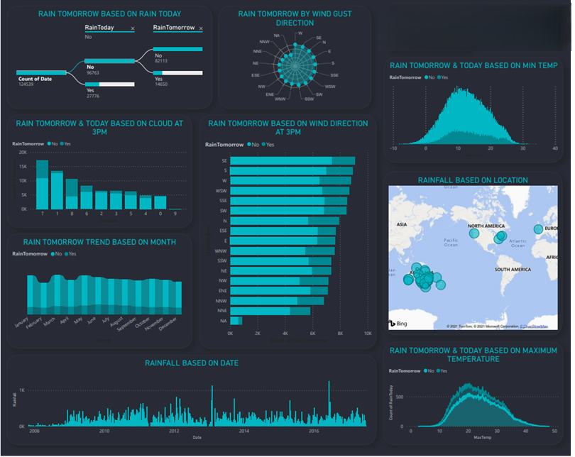
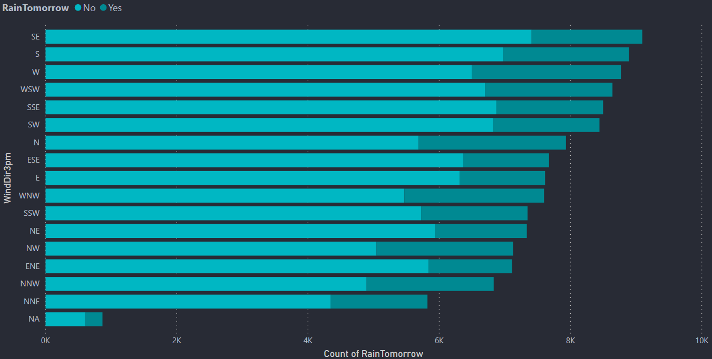
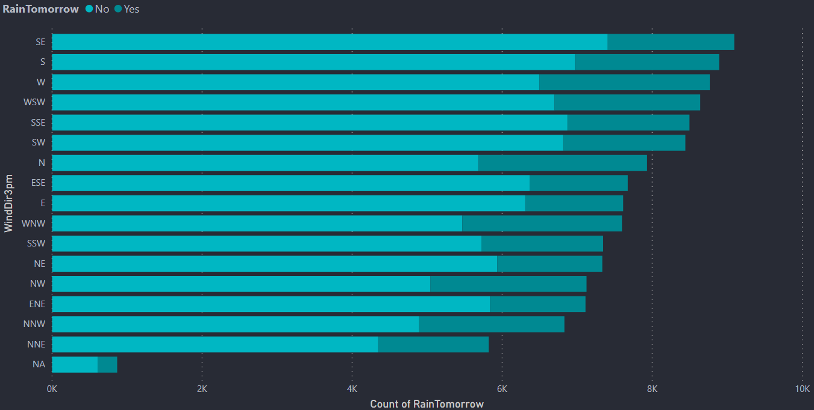
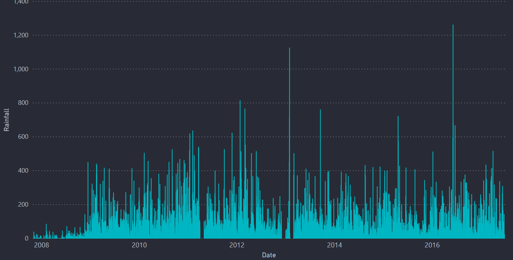
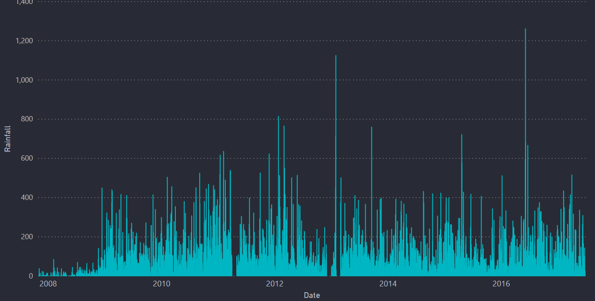

SHINE WITH SUN
THRIVE IN RAIN
"Illuminate your forecast : sunbeams call for joy, raindrops whisper growth. Knowing the sky helps you embrace every day."
More info"Illuminate your forecast : sunbeams call for joy, raindrops whisper growth. Knowing the sky helps you embrace every day."
More infoRADIANT RAIN is a web app which has a Machine Learning model running at the back. The purpose of developing this app is to predict whether it will rain the next day or not. This model is based on the Rain Prediction in Australia dataset. More than 80% of Australia has an annual rainfall of less than 600 mm which is less among the all continents other than Antartica which recieves less rainfall. A place inland near Lake Eyre would only receive 81 mm of rain annually. The average annual rainfall in the Australian desert is low, ranging from 81 to 250 mm. Thunderstorms are relatively common in the region, with an annual average of 15 to 20 thunderstorms. The southern parts of Australia get the usual westerly winds and rain-bearing cold fronts that come when high–pressure systems move towards northern Australia during winter. Cold snaps may bring frosts inland, though temperatures near the coast are mild or near mild all year round. Summers in southern Australia are generally dry and hot with coastal sea breezes. During a lengthy dry spell, hot and dry winds from the interior can cause bushfires in some southern and eastern states, though most commonly Victoria and New South Wales. The tropical areas of northern Australia have a wet summer because of the monsoon. During "the wet", typically October to April, humid north-westerly winds bring showers and thunderstorms. Occasionally, tropical cyclones can bring heavy rainfall to tropical coastal regions, which is also likely to reach further inland.
This dashboard is created using Power BI, a Microsoft product, to analyze and visualize machine learning data related to rainfall patterns. By leveraging Power BI’s interactive visualizations, we can explore trends, seasonal variations, and anomalies in rainfall data, helping in predictive analysis and decision-making. The dashboard integrates ML-generated insights to enhance forecast accuracy, identify regional patterns, and support climate research or agricultural planning. Through dynamic charts, heatmaps, and statistical metrics, this representation provides a comprehensive and intuitive understanding of rainfall trends, making complex ML outputs easily interpretable.



 

 


Ishita Singh and Arpita Dubey are B.Tech students specializing in Computer Science and Engineering at FGIET. With a strong passion for machine learning, they have honed their skills in various domains such as data analysis, predictive modeling, and algorithm development. They have worked on multiple hands-on projects, including a sophisticated rainfall prediction model, demonstrating their ability to translate theoretical knowledge into practical solutions. Their expertise spans programming languages like Python, machine learning frameworks, and advanced problem-solving techniques. Their work has been further enriched through the insightful guidance of their guide Mr JP Pandey, enhancing the quality and depth of their projects.